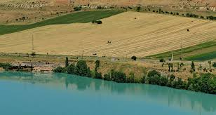

Qashqardaryo
Qashqardaryo

- O'zbekistonning poytaxti - Toshkent shahri.
- O'zbekistonning 12-ta viloyati bor.
- O'zbekistonning bayrog'i, Gerbi va Madhiyasi bor.
Qashqardaryo |
|||||
| Qashqardaryo |
Qashqardaryo
|
||||
| Toshkent | |||||
| Buxoro | |||||
| Samarqand | |||||
| Navoiy | |||||
| Farg'ona | |||||
| Jizzax | |||||
| Xorazm | |||||
| Namangan | |||||
| O'zbekiston | |||||
| Sirdaryo | |||||
| Surxandaryo | |||||
| Andijon | |||||
Qashqadaryo viloyati Vikipediya, ochiq ensiklopediya Navigatsiya qismiga oʻtishQidirish qismiga oʻtish Qashqadaryo viloyati viloyat Tarkibida 13 ta tuman Maʼmuriy markazi Qarshi Yirik shaharlari Qarshi, Shahrisabz, Kitob, Gʻuzor, Yakkabogʻ Hokim Murodjon Azimov[1][2][3][4] Rasmiy tili oʻzbekcha Aholi 3,225,800 (9,7 % , (3-oʻrin) Dinlar tarkibi musulmonlar Maydoni 7900 km² Balandligi dengiz sathidan Baland choʻqqisi 4643 metr m Qashqadaryo viloyati xaritada Qashqadaryo viloyati, Xarita Soat mintaqasi UTC+5 Kod ISO 3166-2 UZ-QA Telefon kodi +998 Internet domeni .uz Avtomobil raqami kodi 70 Rasmiy sayti Qashqadaryo.uz Koordinatalari: 38°50′0″N 66°5′0″E G O Qashqadaryo viloyati — Oʻzbekiston Respublikasi tarkibidagi viloyat. 1920_yil 1-noyabrda tashkil etilgan. Respublikaning janubi-gʻarbida, Qashqadaryo Davlat Kursdosh, Pomir-Olay togʻ sistemasining gʻarbiy chekkasida, Amudaryo va Zarafshon daryolari, Hisor va Zarafshon tizma togʻlari orasida. Shimoli-gʻarbdan Buxoro, janubi-sharqdan Surxondaryo, janubi-gʻarb va gʻarbdan Turkmaniston, sharqdan Tojikiston va Samarqand viloyatlari bilan chegaradosh. Maydoni 28,6 ming km². Aholisi 3,225,800 kishidan ziyod (3-oʻrin) (2020). Viloyat hokimi Murotjon Azimov (2021-yil 18-noyabrdan) Tarkibida 14 tumani (Dehqonobod, Kasbi, Kitob, Koson, Mirishkor, Muborak, Nishon, Chiroqchi, Shahrisabz, Yakkabogʻ, Qamashi, Qarshi, Gʻuzorko'kdala tumani ), 12 shahar (Beshkent, Kitob, Koson, Muborak, Tallimarjon, Chiroqchi, Shahrisabz, Yakkabogʻ, Yangi Nishon, Qamashi, Qarshi, Gʻuzor), 4 shaharcha (Yangi Mirishkor,Dehqonobod, Miroqi, Eski Yakkabogʻ, Pomuq), 147 qishloq fuqarolari yigʻini, 1064 qishloq bor (2005).[5] Mundarija 1 Tabiati 2 Aholisi 3 Turistik manzillar 4 Xoʻjaligi va iqtisodiyoti 5 Transporti 6 Madaniy maorif, sogʻliqni saqlash va sport 7 Tarixi 8 Sogʻliqni saqlash 9 Sport 10 Adabiyoti 11 Matbuoti, radioeshittirishi va televideniyesi 12 Adabiyot 13 Manbalar Tabiati Qashqadaryo viloyati tumanlari haqida alohida maqolalarga q; mas, Dehqonobod tumani, Kasbi tumani va boshqalar. Viloyat hududi, asosan, Qashqadaryo botigʻini oʻz ichiga olgan; shim., sharq va jansharqdan Zarafshon hamda Hisor tizma togʻlari bilan oʻralgan. Togʻlar bilan tekisliklar orasini adirlar egallagan. Tekislikning katta qismi gʻarbda Sandiqli va Qizilqum choʻllari bilan tutashgan Qarshi choʻlidan iborat. Iqlimi kontinental. Qishi nisbatan yumshoq. Yozi uzoq (155-160 kun), issiq, quruq. Yanvarning oʻrtacha temperaturasi 0,2° dan 1,9° gacha, iyulniki 28°-29,5°. Eng yuqori temperatura 45°. Eng past temperatura −20°.-yiliga tekisliklarda 290-300 mm, adirlarda 520-550 mm, togʻlarda 550-650 mm yogʻin tushadi. Yogʻin, asosan, bahor va qishda yogʻadi, yozda garmsel esadi. Togʻlarda turgʻun qor qoplami hosil boʻladi (2-6 oy). Vegetatsiya davri tekisliklarda 290-300 kungacha. Asosiy daryosi — Qashqadaryo. Uning irmoqlari — Jinnidaryo, Oqsuv, Yakkabogʻdaryo, Tanxozdaryo, Gʻuzordaryo (Katta va Kichik Oʻradaryo bilan birga). Daryolar qor, yomgʻir va muzliklar suvidan toʻyinadi. Daryo suvidan, asosan, sugʻorishda foydalaniladi. Chimqoʻrgʻon, Qamashi, Pachkamar suv omborlari; Fayziobod, 8 Mart, Eskibogʻ, Eski Anhor, Koson, Paxtaobod, Qarshi va boshqalar kanallar bor. Qarshi choʻlini oʻzlashtirishda 6 nasos stansiyasi, ochiq va yopiq kollektor drenaj tarmoqlari qurilgan. Sugʻoriladigan yerlarning tuprogʻi, asosan, tipik va och boʻz tuproqlar. Kitob — Shahrisabz soyligida koʻproq qumoq tuproqlar mavjud. Togʻlarda balandlik mintaqalari boʻylab tipik boʻz tuproqlar tarqalgan. Tabiiy florasi 1200 ga yaqin yuksak oʻsimlik turidan iborat. Viloyatda 76,6 ming ga oʻrmon mavjud. Oʻrmonlarning asosiy qismini archa va saksovulzorlar tashkil etadi. Togʻ yon bagʻirlari har xil oʻt oʻsimliklari bilan qoplangan, shuningdek, butazorlar ham bor. Togʻ oʻrmonlari archa, bodom, pista, jiydazorlardan iborat. Togʻlarda naʼmatak, zirk, chakanda, anzur piyozi, qora zira va boshqalar oʻsadi. Viloyat hududida 100 dan ziyod qush turi, sut emizuvchilarning 60 turi, sudralib yuruvchilarning 7 turi uchraydi. Daryo va suv havzalarida qumbaliq, ilonbosh, zogʻorabaliq, gulmohi, xramula, qorabaliq yashaydi. Viloyatda Hisor togʻoʻrmon va Kitob davlat geologiya qoʻriqxonalari joylashgan; Kitob balandtogʻ rasadxonalar majmuasi faoliyat koʻrsatadi. Viloyat Qashqadaryo havzasida va Pomir-Oloy togʻ tizmasining gʻarbiy chekkalarida joylashgan. Viloyat hududi gʻarbdan sharqqa tomon 300-400 metrgacha koʻtarilib boradi. Viloyatning sharqiy qismi Kitob-Qamashi togʻ etaklaridan iborat boʻlib, u yerlarning balandligi 450-500 dan 900-950 metrgacha boradi. Viloyat doirasidagi togʻlarning asosiy qismi uning shimoli-sharqiy qismini egallagan. Bu yerdagi togʻlarning eng baland nuqtalari 4000 metrgacha yetadi. Qashqadaryo viloyati maydoni 28,6 km, aholisi 2.442,2 mingdan ortiq (2006). Aholining qariyb 3/4 qismi qishloqlarda istiqomat qiladi. Aholisi Aholisi, asosan, oʻzbeklar (91,2 %), shuningdek, tojik, turkman, rus, qozoq, ukrain, ozarbayjon, koreys, qirgʻiz, turk, ukrain, belorus va boshqalar millat vakillari ham yashaydi. Aholining oʻrtacha zichligi 1 km²ga 83,7 kishi. Shahar aholisi 587,5 ming kishi, qishloq aholisi 1790,7 ming kishi (2005). 20-asr boshlarigacha hozirgi Qashqadaryo viloyati hududida yashagan aholining koʻpchiligi orasida urugʻqabilalarga boʻlinish saqlanib kelgan. Mas, Qarshi shahri va uning atroflarida mangʻit, saroy, qavchin, qatagʻon, kutchi, qipchoqlar, xtoy, qirq va boshqalar urugʻlar, Shahrisabz va uning atroflarida kenagas, saroy, qutchi, turk, qatagʻon, qalmoq, qangʻli, chuyut, qiyot, qoʻngʻirot, mojor, mangʻit, mitan, moʻgʻul, nayman, sayot urugʻlari, Gʻuzor va uning atroflarida qavchin, kerayit, qoʻngʻirot, mangʻit va boshqalar urugʻlar yashagan. Ular dehqonchilik, chorvachilik va hunarmandchilik bilan shugʻullanishgan. Turistik manzillar Qashqadaryo koʻprigi Qarshi shahri, Ravoq MFY Qarshi shahridagi qadimiy koʻprik ayni paytda “Amir Temur koʻprigi” deya nomlanadi. Manbalarga koʻra, u 700 yillik tarixga ega boʻlib, qadimda Qashqadaryo daryosi qirgʻoqlarini birlashtirgan hamda xalqaro iqtisodiy va ijtimoiy aloqa vositasi boʻlgan. Bir vaqtlar ushbu tarixiy koʻprik ustidan Eron va Hindistonni Yevropa bilan bogʻlovchi karvon yoʻllari oʻtgan. Shu bois bu voha asrlar davomida gullab-yashnagan. Olim va sayyoh German Vamberining yozishicha, 1860-yillarda Qarshi shahrida 10 ta karvonsaroy, katta bozor, shahar aholisi dam oladigan bogʻ boʻlgan. U bunday bogʻni boshqa yurtlarda uchratmaganini alohida qayd etgan. Oʻrta Osiyoning qadimgi inshootlaridan hisoblangan koʻprik asosan pishiq gʻisht va mustahkamlovchi qorishmalardan iborat boʻlgan, unda 12ta pillapoya va 14ta ravoq koʻrinib turgan. Vaqt oʻtishi bilan daryoning oʻzani kengayadi, koʻprikni uzaytirish va qayta taʼmirlash zarurati tugʻiladi. Shu tufayli 1914-yilda koʻprikning har ikki tarafidan qoʻshimcha qismlar qurilgan hamda kirish joyida pishiq gʻishtdan ikkita qorovulxona barpo etilgan. Ular yuk transporti harakatiga xalaqit berganligi uchun 1970-yilda buzib tashlangan, lekin 2005-yilda yana qayta tiklangan. Inshoot juda puxta, mustahkam qurilgan boʻlib, oʻzbek meʼmorchiligidagi muhandislik sohasida dadil qadam hisoblanadi. Tarixiy maʼlumotlar shundan dalolat beradiki, Qashqadaryo koʻprigi ustidan makedoniyalik Iskandar qoʻshinlari, aravalari, arablar, Chingizxon, Amir Temur, Bobur, Shayboynixon suvoriylari ham oʻtgan. '''Imom Moʻyin an-Nasafiy majmuasi''' Qarshi tumani, Qovchin MFY, Qovchin qishlogʻi Qashqadaryo zaminining ulugʻ allomalardan, dunyo fanlari rivojlanishiga oʻzining salmoqli hissasini qoʻshgan, ayniqsa Movarounnahrning fiqh (islom huquqshunoslik) ilmi miqyosidagi katta oʻrin tutgan Motrudiya kalom maktabini atoqli namoyandalaridan biri buyuk olimlar oilasiga mansub yirik faqih Abul Muʼiyn an-Nasafiy 1027-yil Nasaf shahrida tugʻilgan. Abul Muʼiyn uzoq vaqt Buxoro va Samarqandda yashab ijod etgan. Fathulloh Xulayf “Abul Muʼiyn Moturudiy kalom maktabini himoya qilib turuvchi buyuk shaxs” deb tariflaydi. “Vaqf” xayriya jamoat fondi Qashqadaryo boʻlimi Suvtushar sharsharasi Shahrisabz tumani Suvtushar sharsharasi Suvtushar soyning boshlanish qismida, dengiz sathidan 2100 m. Balandlikda joylashgan. Sharsharaning balandligi 84m. Boʻlib, katta qoya toshlar va archazorlar orasida joylashganligi bilan tabiat shaydolarini oʻziga maftun etadi. Ushbu sharshara Hisor togʻ tizmasining 4000 m. Balandlikdagi Osmontalash korli qoyalaridan paydo boʻlgan suvlar hisobiga hosil boʻladi. Oʻziga xos ajib bir kuyni chalib, sohibjamolning uzun yoyilgan kokillarini eslatuvchi suvning shiddatli oqimi ushbu sharshara suvini koʻpirtirib, oppoq holatga olib keladi va shuning uchun mahalliy xalq orasida gohida uni Suttushar sharsharasi ham, deb ataydilar. Hisor davlat qoʻriqxonasi Xoʻjaligi va iqtisodiyoti Qashqadaryo viloyati qishloq xoʻjalik mahsulotlarini yetishtirish hamda yoqilgʻi resurslarini qazib olish boʻyicha Oʻzbekistonda muhim oʻrin egallaydi. Viloyat respublikada qazib olinadigan tabiiy gazning 88 %, neftning 92 %, kondensatning 99,6 %, oltingugurtning 100 % ni beradi. Qashqadaryo respublikada eng koʻp don va paxta yetkazib beradigan viloyatdir. Oʻzbekistonda tayyorlanadigan yalpi qishloq xoʻjaligi mahsulotining 10,2 %,shu jumladan, paxtaning 11,8 %, gʻallaning 12 %, qorakoʻl terining 19 % viloyat hissasiga toʻgʻri keladi. Tabiiy gaz, kondensat va qishloq xoʻjaligi mahsulotlarini qayta ishlovchi tarmoqlar rivojlanmoqda. Viloyatda 1,1 ming kichik korxona, 40,6 ming mikrofirma bor. Bular sanoat, qurilish, savdo va umumiy ovqatlanish, qishloq xoʻjaligi va boshqalar korxonalardan iborat. Sanoatining yetakchi tarmoqlari: — tabiiy gaz va neft qazib olish, gazni qayta ishlash, paxta tozalash, yogʻ ekstraksiyasi, qurilish materiallari ishlab chiqarish, ip yigiruv, tikuvchilik, oziqovqat va boshqalar Eng yirik korxonalari: Muborak neftgaz unitar korxonasi, Shoʻrtan gaz unitar korxonasi, Muborak gazni qayta ishlash zavodi, Shoʻrtan gaz kimyo majmuasi, Qarshi, Koson yogʻekstraksiya, Shahrisabz konserva zavodlari, Shahrisabz pillakashlik, Qarshi tikuvchilik fabrikalari, Qashqadaryo marmar aksiyadorlik jamiyati, Dehqonobod kaliy zavodi va boshqalar 49 qoʻshma korxona faoliyat koʻrsatadi, shulardan: Oʻzbekiston — Turkiya „Kashteks“ toʻqimachilik, „Oqsaroy toʻqimachilik LTD“ qoʻshma korxonalari ishlamoqda. Viloyat hududidagi dastlabki sanoat korxonasi — Shahrisabz paxta tozalash zavodi 1916-yilda qurilgan. Undan keyingi davrda viloyatda, asosan, paxta tozalash zdlari, tikuvchilik fabrikalari qurildi. 1971-yilda Muborak gazni qayta ishlash zavodi ishga tushirildi. Mustaqillik-yillarida Shahrisabz, Yakkabogʻ un ktlari, Tallimarjon issikdik elektr stansiyasi, 2001-yil oxirida Shoʻrtan gaz kimyo majmuasi qurilib ishga tushirildi. Qashqadaryo viloyati da gaz (propan), jun, paxta tolasi, momiq, polietilen, tomat pastasi, turli xil plitalar ishlab chiqariladi. Qishloq xoʻjaligining asosiy tarmoqlari: gʻallachilik, paxtachilik, kartoshkachilik, polizchilik, sabzavotchilik, chorvachilik. Bogʻdorchilik, tokchilik, ipakchilik ham salmoqli oʻrin tutadi. Chorvachiligi goʻsht-sut yetishtirishga ixtisoslashgan. Qoramolchilik, qoʻychilik, parrandachilik rivojlangan. Muborak, Mirishkor, Nishon, Gʻuzor tumanlarida qorakoʻlchilikka ixtisoslashgan yirik naslchilik xoʻjaliklari mavjud. Asalarichilikka ham katta eʼtibor berilgan. Qashqadaryo viloyatida 667,6 ming ga ekin maydoni mavjud boʻlib, shundan 418,7 ming gektari sugʻoriladi. 173,8 ming ga yerga paxta, 205 ming ga yerga don, 3,2 ming ga yerga sabzavot, 2 ming ga yerga poliz, 0,5 ming ga yerga kartoshka, 38,1 ming ga yerga ozuqa ekinlari ekiladi. 32,8 ming ga yer koʻp-yillik daraxtzorlar, shundan 13,2 ming ga yer mevazor, 9,2 ming ga yer tutzor, 10,4 ming ga yer tokzorlar bilan band, 1451 ming ga yerni yaylovlar egallagan. Yerning meliorativ holatini yaxshilash maqsadida 13815 km uzunlikda kollektordrenaj tarmoqlari qurilgan. Viloyatda sugʻoriladigan dehqonchilikni rivojlantirish maqsadida sugʻorish kanallari (Qarshi, Sandal va boshqalar) va suv omborlari (Tallimarjon, Chimqoʻrgʻon, Hisorak, Qizilsuv vaʼb.) barpo etilgan. Sugʻorishni tashkil etish uchun 6 ta yirik nasos stansiyasi qurilgan. Qishloq xoʻjaligi mahsulotlari yetishtirishni koʻpaytirish maqsadida Qarshi choʻlida 250 ming ga yer oʻzlashtirilgan. Viloyatda 68 shirkat, 17,6 ming dehqon, 17,2 ming fermer xoʻjaliklari faoliyat koʻrsatadi. Qashqadaryo viloyati shirkat, fermer va shaxsiy xoʻjaliklarida 654,7 ming qoramol (shu jumladan, 276,8 ming sigir), 2,2 mln. qoʻy va echki, 1,3 mln. parranda, 17,3 ming-yilqi boqiladi (2005). 1996-2005-yillar viloyatdan B.Roʻziyev, Q.Moʻminov, Gʻ. Rahmonov, M.Saidovlar „Oʻzbekiston Qahramoni“ unvoniga sazovor boʻldilar.
